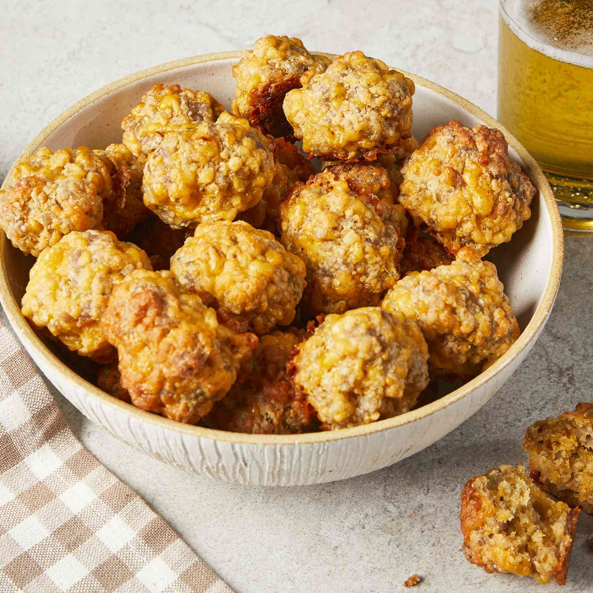

Sausage Balls

Introduction
This cheese dip has all the best ingredients! I compiled it from various other recipes and it's my favorite by far. Serve as a dip at a party or with sour cream and jalapeños to make nachos.
Ingredients
- 2 pounds of sausage
- 16oz cheese
- Pancake mix
- Milk
Steps
- Combine all ingredients in a bowl
- Roll the mixture into a tablespoon size ball
- Place on a pan and cook for 20 minutes at 350 degrees
Home